پدر علم آمار ایران
videos/yad.mp4 قرار دهید.
از توصیف دادهها تا تصمیمگیری درباره جامعه
videos/intro.mp4 قرار دهید.
دادهها را خلاصه و توصیف میکند. اما نمیتواند نتیجه را به خارج از دادههای مشاهدهشده تعمیم دهد.
بر اساس یک نمونه، درباره پارامتر جامعه نتیجهگیری میکند.
سرشماری وقتگیر، پرهزینه و گاهی غیرممکن است. پس ناچاریم از نمونه استفاده کنیم.
تصادفی ساده، خوشهای، طبقهای، سیستماتیک
videos/sampling.mp4 قرار دهید.
مجموعه کل واحدهای آماری.
زیرمجموعهای از جامعه که با روش مشخص انتخاب میشود.
فرایند انتخاب نمونه برای تعمیم اطلاعات به جامعه.
| روش | ویژگی کلیدی | مثال |
|---|---|---|
| تصادفی ساده | همه شانس برابر دارند | قرعهکشی ۵ نفر از ۲۰ نفر |
| خوشهای | انتخاب چند خوشه، بررسی همه اعضا | ۵ مدرسه از ۲۰ مدرسه |
| طبقهای | تقسیم به طبقات همگن، نمونه از هر طبقه | دختر/پسر و نمونه از هر گروه |
| سیستماتیک | فواصل ثابت، شروع تصادفی | هر ۵ نفر یک نفر از ۱۰۰ نفر |
انتخاب ۲۰ نفر از ۱۰۰ نفر
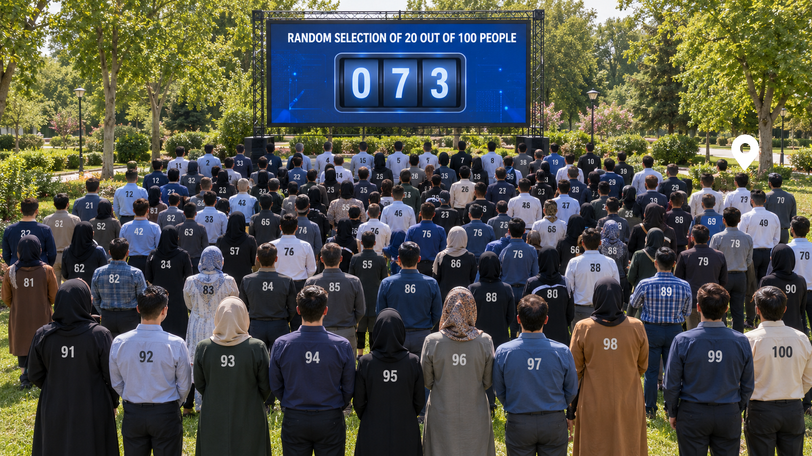
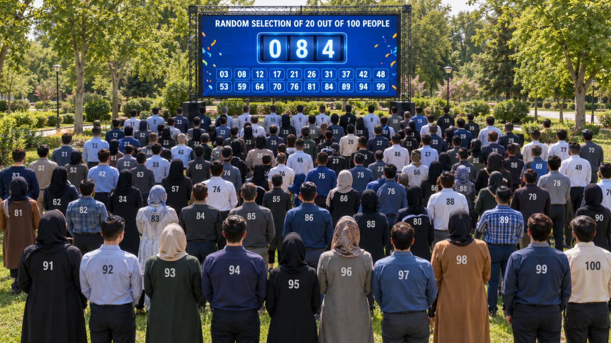
تقسیم جامعه به طبقات همگن و نمونهگیری از تمام طبقات
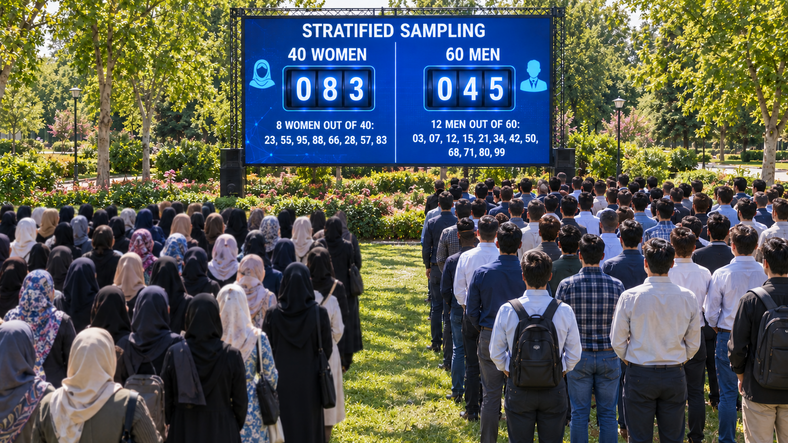
در این روش، جامعه را به گروههای همگن (مثل دختران و پسران، یا پایههای تحصیلی مختلف) تقسیم میکنیم و از هر گروه به نسبت جمعیتش، به صورت تصادفی نمونه انتخاب میکنیم. این کار باعث میشود همه اقشار جامعه در نمونه ما نماینده داشته باشند.
انتخاب چند خوشه و بررسی تمام اعضای آن
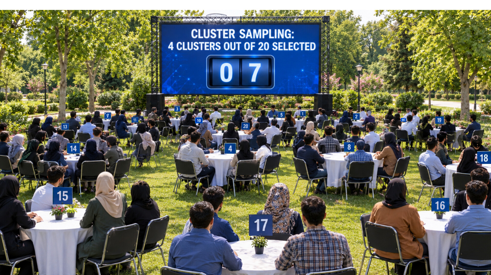
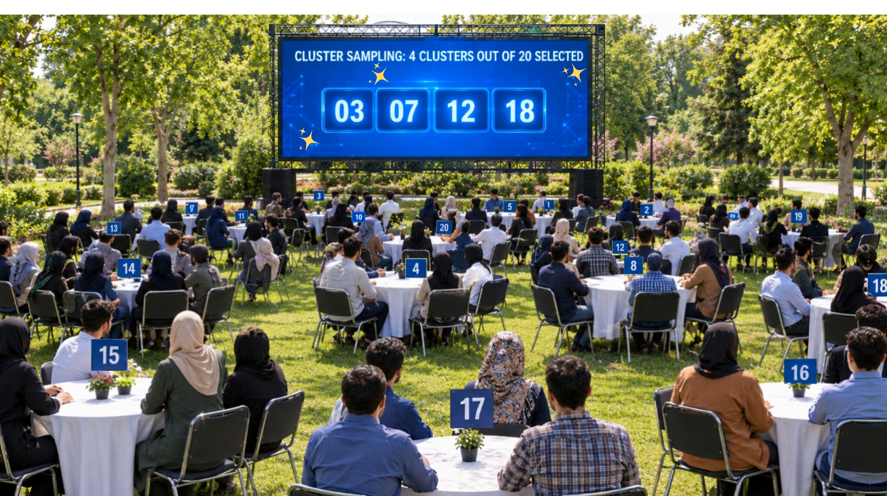
روی یکی از اعداد شروع کلیک کنید تا انتخاب زنده را ببینید
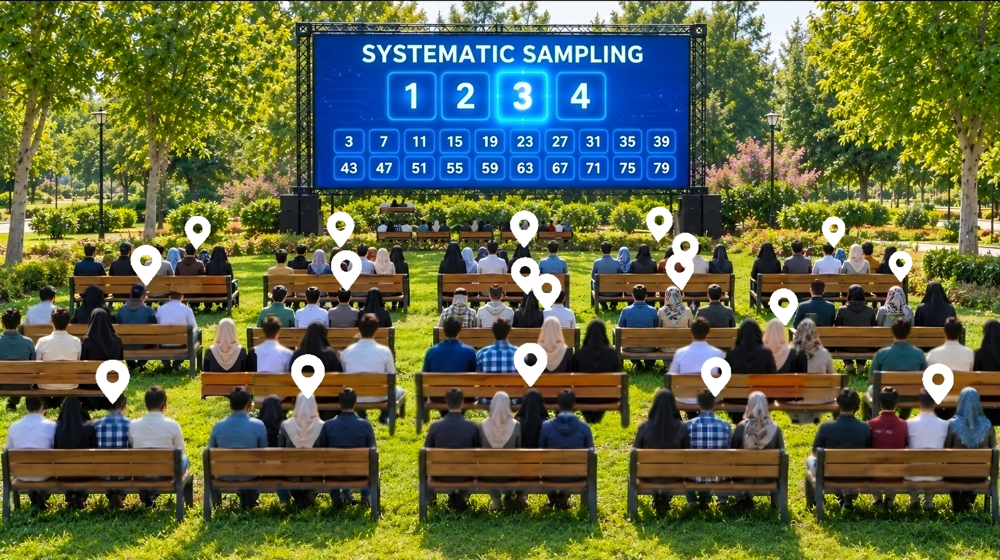
۱۰۰ نفر در ۲۰ گروه ۵ نفره. یک نقطه شروع تصادفی انتخاب میشود و سپس هر ۵ نفر یکی وارد نمونه میشود. روی یکی از اعداد شروع کلیک کنید.
هنوز انتخابی انجام نشده است.
وقتی نمونهگیری اشتباه میشود
videos/bias.mp4 قرار دهید.
نمونه از محدوده طرح ترافیک ← اکثراً از وسایل نقلیه عمومی استفاده میکنند. نتیجه اریب میشود.
خانوادههای پرجمعیت شانس بیشتری برای انتخاب دارند. بعد خانوار بیشتر از واقعیت برآورد میشود.
کلاسهای پرجمعیتتر شانس بیشتری دارند و نتیجه اریب میشود.
در روستا: فقط یک نفر از هر خانواده. در مدرسه: تعداد برابر از هر کلاس.
برآورد نقطهای و بازهای
videos/estimation.mp4 قرار دهید.
مشخصه عددی جامعه. ثابت ولی مجهول. مثل μ.
مشخصه عددی نمونه. متغیر. مثل x̄.
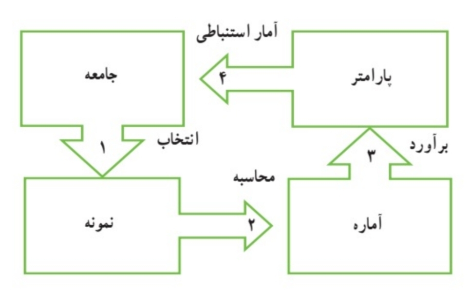
چرخه استنباط آماری — صفحه ۲۸ جزوه
با افزایش حجم نمونه، توزیع آماره باریکتر و برآورد دقیقتر میشود.
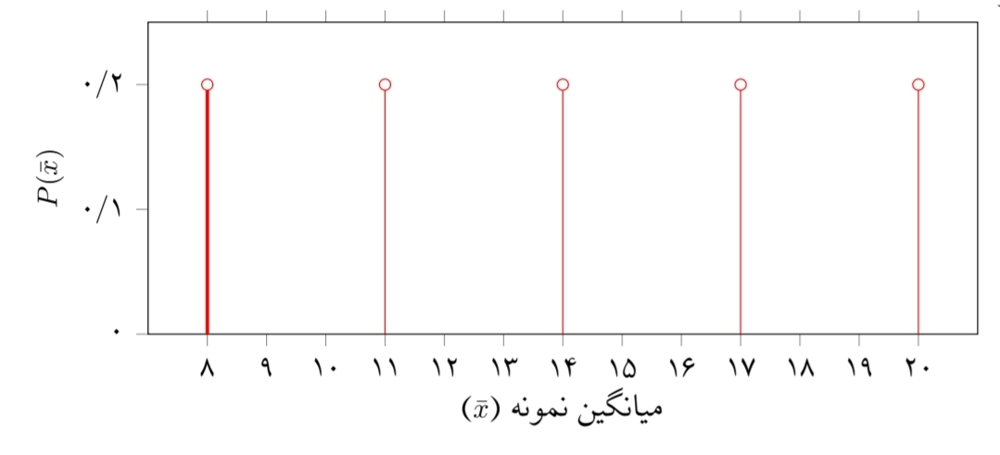
نمونههای تکعضوی
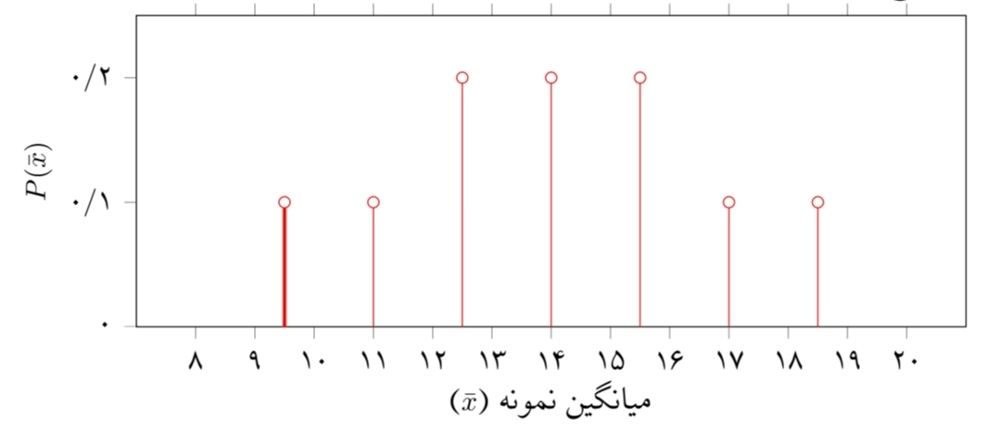
نمونههای دوعضوی
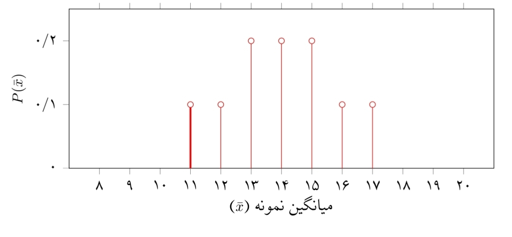
نمونههای سهعضوی
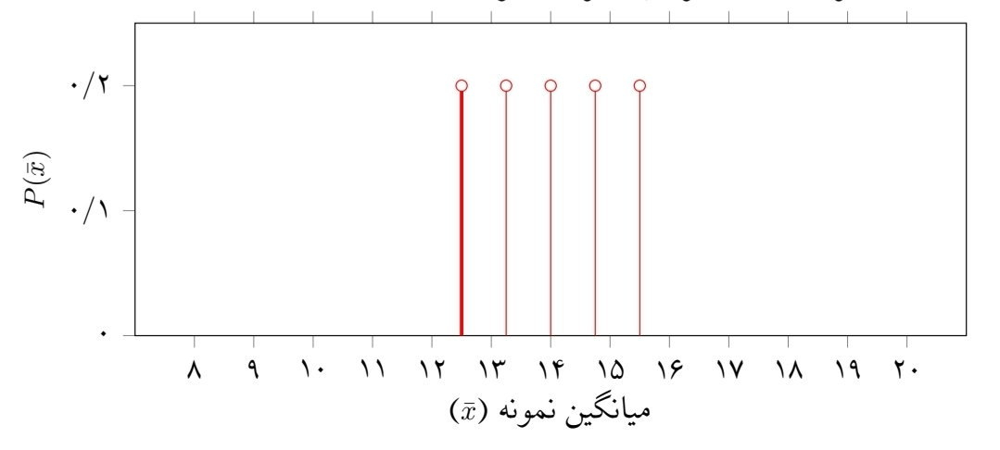
نمونههای چهارعضوی
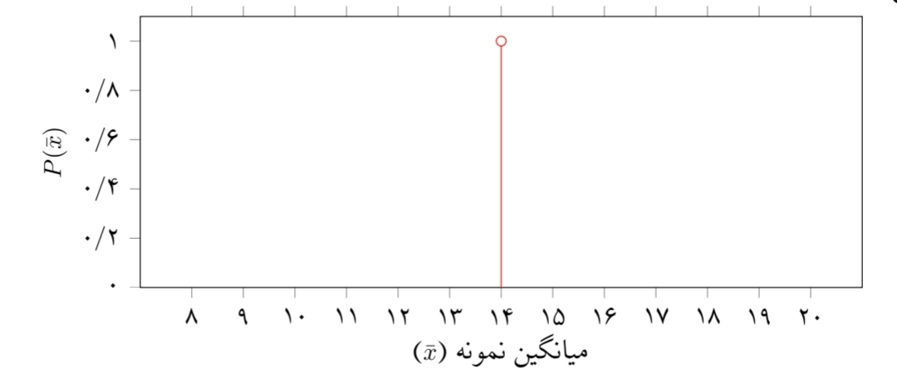
نمونههای پنجعضوی — برآورد دقیقتر (صفحه ۴۱)
از بافتنگاشت تا منحنی نرمال
وقتی دادههای نمرات ۲۴ دانشآموز را در بازههای مساوی نمایش میدهیم، بافتنگاشت زیر به دست میآید. با اتصال وسط مستطیلها، چندبر فراوانی رسم میشود.
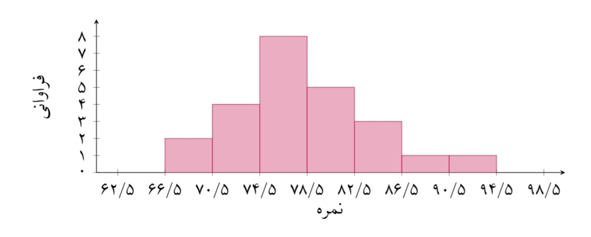
بافتنگاشت فراوانی نمرات (صفحه ۵۰)
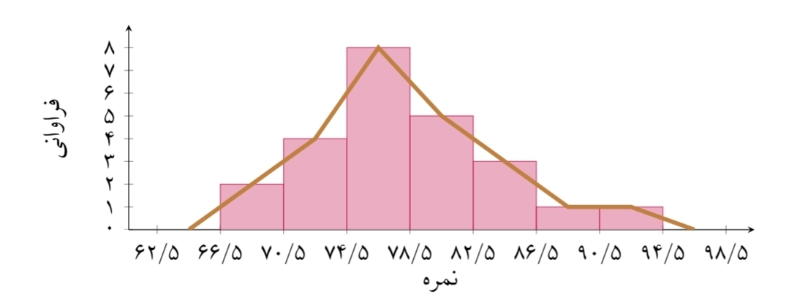
چندبر فراوانی — خط قهوهای (صفحه ۵۰)
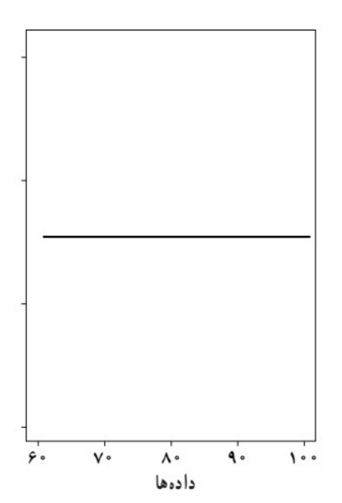
یکنواخت
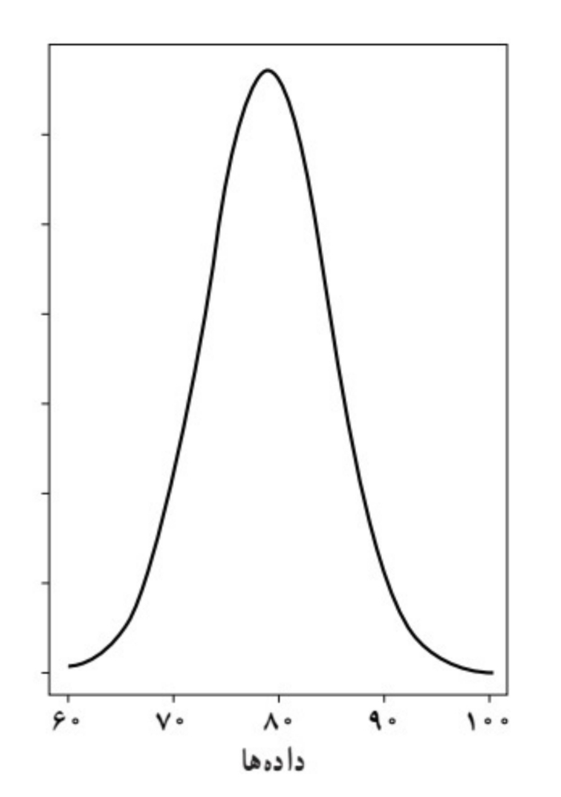
نرمال
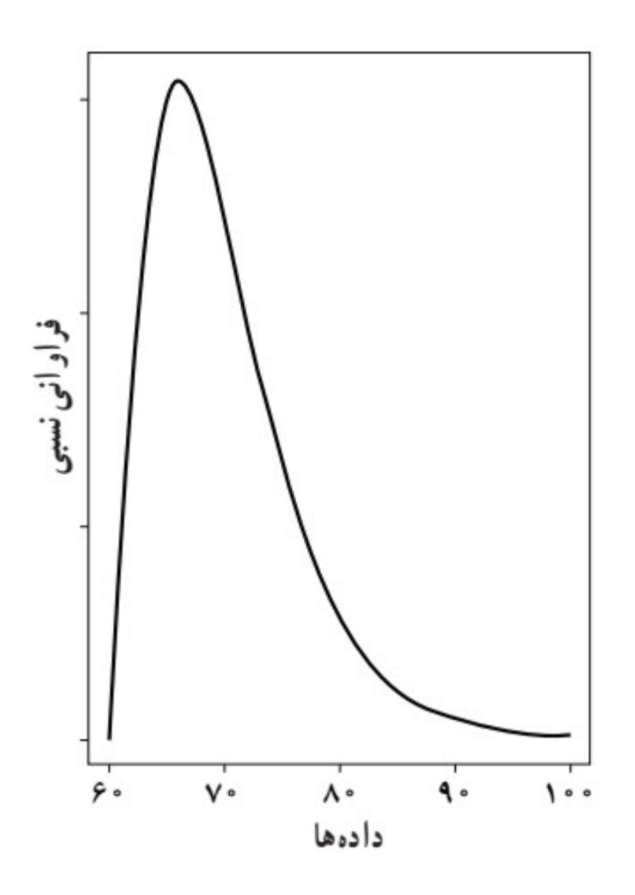
چوله (نامتقارن)
تعبیر شهودی ۹۵٪
videos/confidence.mp4 قرار دهید.
بازه باریکتر، برآورد دقیقتر.
بازه پهنتر، برآورد کمدقتتر.
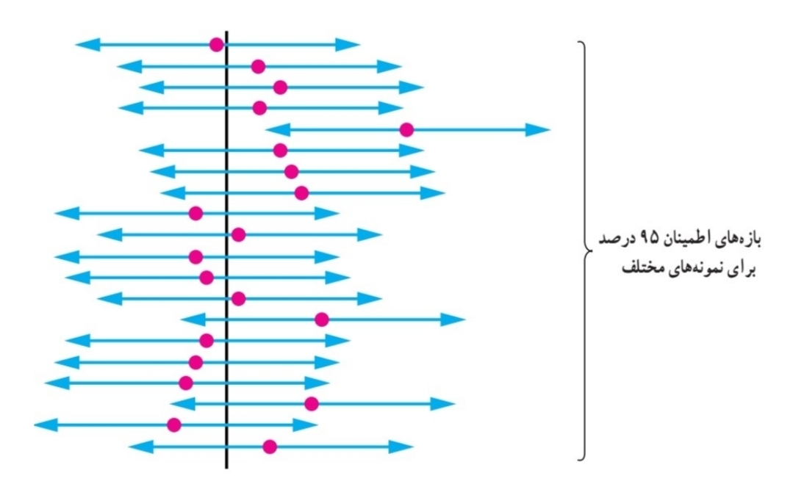
۲۰ بازه اطمینان ۹۵٪ — ۱۹ تا خط μ را قطع کردهاند (صفحه ۵۱)
دانش خود را محک بزنید
آنچه یاد گرفتیم
تصادفی، خوشهای، طبقهای، سیستماتیک
نقطهای و بازهای
شناسایی منابع سوگیری